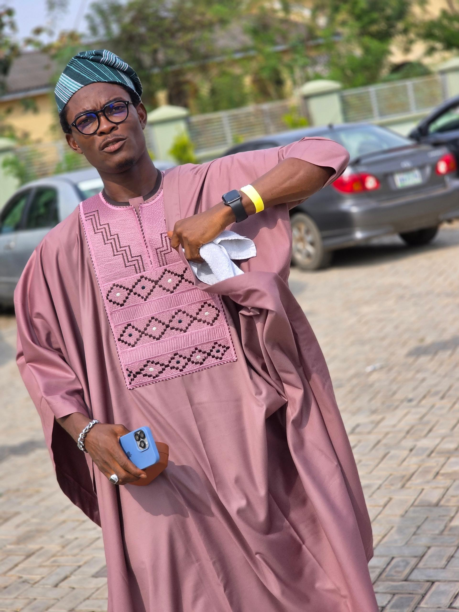
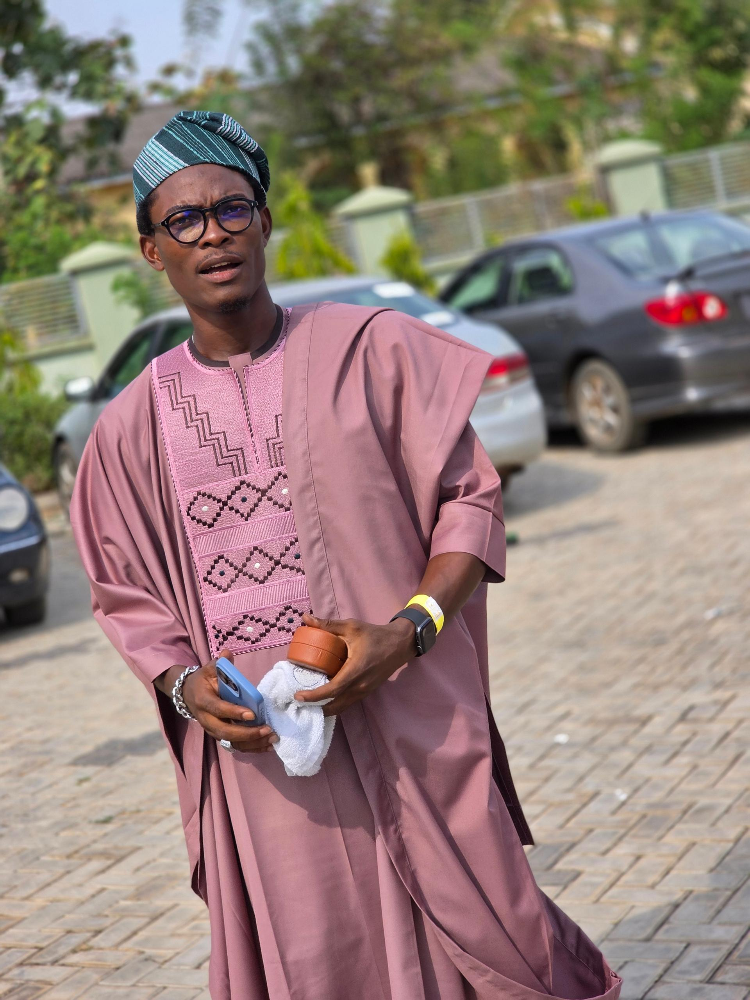

TALES WITH VINNY
Our Spark Under the Wedding Lights
It all began on a magical day at my friend's wedding,a celebration filled with love, laughter, and endless vibes. As one of the groomsmen, I was caught up in the joy and rhythm of the moment, rocking my agbada like it was tailor-made to melt hearts. Little did I know, someone had already noticed me amidst the crowd.


She saw me first, drawn to my effortless charm and, of course, the way my agbada added an extra layer of suave. But I was blissfully unaware, living in the moment, soaking up the happiness around me.
Our paths finally crossed at the after-party. I spotted her and, with a spark of boldness, asked her to dance. She agreed, and for a fleeting ten seconds, the world seemed to pause. Unfortunately, the DJ and MC had other plans and they interrupted us with a game, splitting us apart just as the rhythm was starting to bring us together.
The night moved on, and so did the after-party, leading us all to an apartment to keep the celebration alive. She was there too, but somehow, I didn't notice her again. Call it fate's playful way of saying, "The best is yet to come."
The Spark That Waited to Be Seen.
The after-party kicked off in full swing—a continuation of the laughter and excitement from my friend's wedding. The vibes were perfect, the room buzzing with joy, but somehow, I didn't notice her. She had her eyes on me the whole time, yet it seemed that fate was taking its time with us.
Maybe it was the dim lighting, maybe it was the energy of the celebration, but I was caught up in the moment and blind to her presence. But deep down, I knew there was a move to make—a connection waiting to happen.
I reached out to the groom, my friend who had orchestrated this beautiful day. With his help, the pieces finally came together. He introduced us, and that's where our story truly began—a moment that turned into something neither of us could have anticipated.
The Spark That Ignited Our Story.
Our first conversation was like a dance, a rhythm that flowed effortlessly between us. We talked, we laughed, we shared stories that felt like pieces of a puzzle coming together. It was easy, it was natural, and it was the spark that ignited our story.
When I got Vinny’s contact, I prepared myself for a potential playful challenge or a bit of mystery in her response. Instead, what I got was the sweetest reply, warm, kind, and full of charm. It felt as though the universe had set everything in motion, ensuring that our paths didn’t just cross but intertwined. It was in that moment that I realized this wasn’t just attraction, this was love.
From that day on, we were inseparable. We talked for hours, discovering the layers of our souls, the dreams that danced in our hearts, and the love that was waiting to bloom. It was a whirlwind of emotions, a journey that felt like destiny had finally found its way to us.
Vinny, my Igbo sweetheart, has brought so much joy into my life. She’s always ready to brighten my day and fill it with happiness. She gives me the best kind of wahala, sprinkled with that irresistible, adorable shakara that keeps me on my toes, the perfect blend of adorable shakara and sweet wahala, the kind that makes life infinitely more exciting. She’s truly one of a kind.
Reasons i'm a "finished man" for Vinny:

-
 Her breathtaking beauty: one glance at her gorgeous self, and my day is instantly brighter.
Her breathtaking beauty: one glance at her gorgeous self, and my day is instantly brighter.
-
 Her captivating smile: it’s like an antidote to every worry, a promise of better days.
Her captivating smile: it’s like an antidote to every worry, a promise of better days.
-
 Her impeccable figure: the kind that leaves me in awe, day after day.
Her impeccable figure: the kind that leaves me in awe, day after day.
-
Her heavenly voice: a melody so sweet it deserves a Grammy, and yet, it’s all mine to cherish.
Vinny is my muse, my happiness, and my reason to smile a little wider each day. She’s not just the sweetest person I’ve ever met. she’s the best thing that’s ever happened to me.
A Love Worth Celebrating
From the very first spark at my friend’s wedding to every moment since, Vinny has shown me what it means to truly care and be cared for. She’s my joy, my happiness, and the reason I have so much to smile about every day.
Vinny, you are my brightest light, my sweetest melody, and my happiest thought. This little webpage is my playful way of saying just how much you mean to me. You’re not just the girl of my dreams, you’re my reality, my forever muse.
Here’s to you, my one and only Igbo sweetheart. Keep being you, because you’re perfect just the way you are. And don’t forget your sprinkle of adorable shakara is always welcome. 😊💖